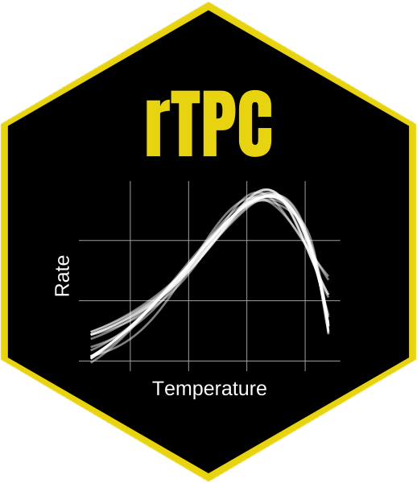

    <!-- Pubs Section -->
    <section id="software" class="container content-section text-left">
        <div class="row">
            <div class="col-lg-10 col-lg-offset-1">
                <!--FW: original = <div class="col-lg-8 col-lg-offset-2"> -->
                <h2>Software</h2>
                <p>I maintain and contribute to multiple packages and small tools, primarily in R and Python. I am also interested in new problems and challenges, particularly (though not exclusively) focused on image processing problems.</p>
                <h3>R Packages</h3>
                <h3 class="pkgh3"><a href="https://github.com/fwimp/ohvbd">OHVBD</a></h3>
                <p><span class="pkgname">ohvbd</span> is an R package for retrieving (and parsing) data from a network of disease vector data sources.
                    It allows for the searching and retrieval of data from multiple data sources such as
                    <a href="https://vectorbyte.crc.nd.edu/vectraits-explorer">VecTraits</a>,
                    <a href="https://vectorbyte.crc.nd.edu/vecdyn-datasets">VecDyn</a>,
                    and <a href="https://pearselab.github.io/areadata/">AREAdata</a>. <br><span class="deprioritise"><i>(Author, Maintainer)</i></span></p>
                <h3 class="pkgh3"><a href="https://github.com/fwimp/roz">ROZ</a></h3>
                <p><span class="pkgname">roz</span> enables programmatic access to a variety of services provided by the <a href="https://www.onezoom.org/">OneZoom project</a>. <br><span class="deprioritise"><i>(Author, Maintainer)</i></span></p>
                <h3 class="pkgh3"><a href="https://github.com/padpadpadpad/rTPC">rTPC</a></h3>
                <p><span class="pkgname">rTPC</span> is an R package that helps fit thermal performance curves (TPCs) in R.
                <br>It contains 43 model formulations previously used to fit TPCs and has helper functions to help set sensible start parameters, upper and lower parameter limits and estimate parameters useful in downstream analyses, such as cardinal temperatures, maximum rate and optimum temperature. <br><span class="deprioritise"><i>(Contributor)</i></span></p>
                <h3 class="pkgh3"><a href="https://github.com/padpadpadpad/nls.multstart">nls.multstart</a></h3>
                <p><span class="pkgname">nls.multstart</span> provides functions for robust and reproducible non-linear regression.
                <br>Similar to the R package nls2, it allows multiple starting values for each parameter and then iterates through multiple starting values, attempting a fit with each set of start parameters. The best model is then picked on AIC score. This results in a more reproducible and reliable method of fitting non-linear least squares regression in R.<br><span class="deprioritise"><i>(Contributor)</i></span></p>
                <h3>Python Packages & Tools</h3>
                <h3 class="pkgh3"><a href="https://github.com/fwimp/Cano.py">Cano.py</a></h3>
                <p><span class="pkgname">Cano.py</span> is a tool written in Python 3 and scikit-image to automate the projection and analysis of cylindrical canopy images.
                   It will crop an image, reproject it in hemispherical space, and calculate measures of LAI & Openness from the canopy cover.<br><span class="deprioritise"><i>(Author, Maintainer)</i></span></p>
            </div>
        </div>
    </section>
